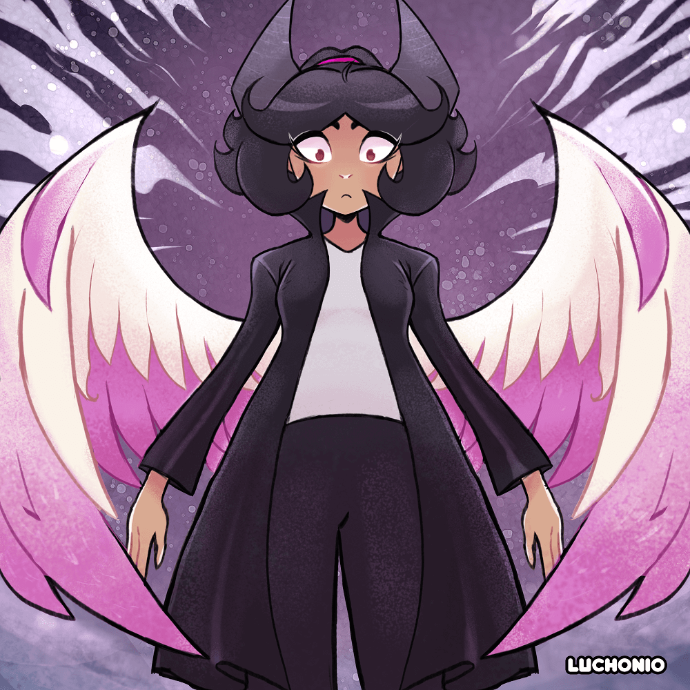
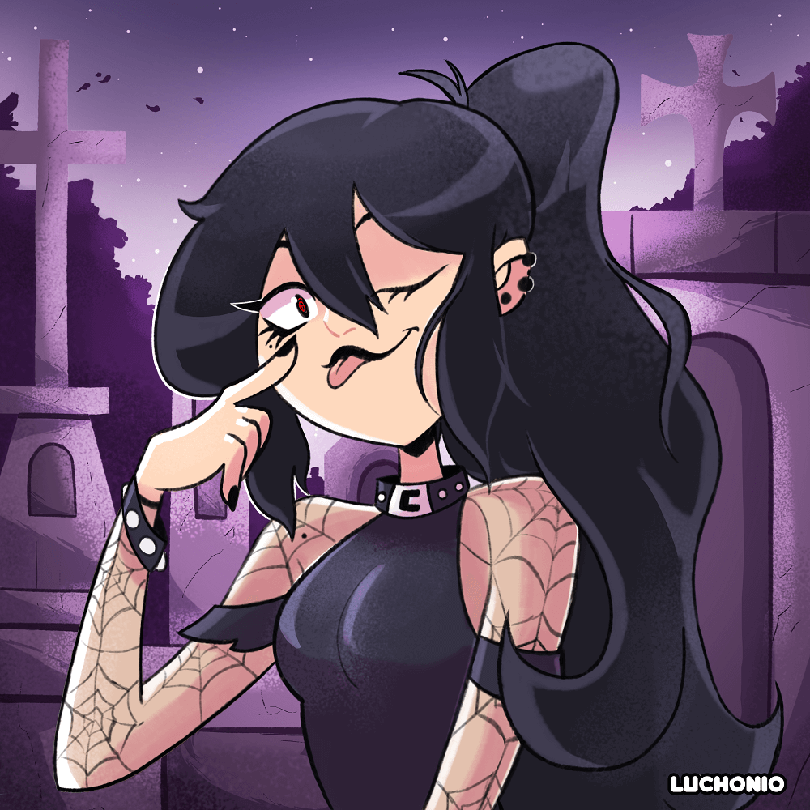
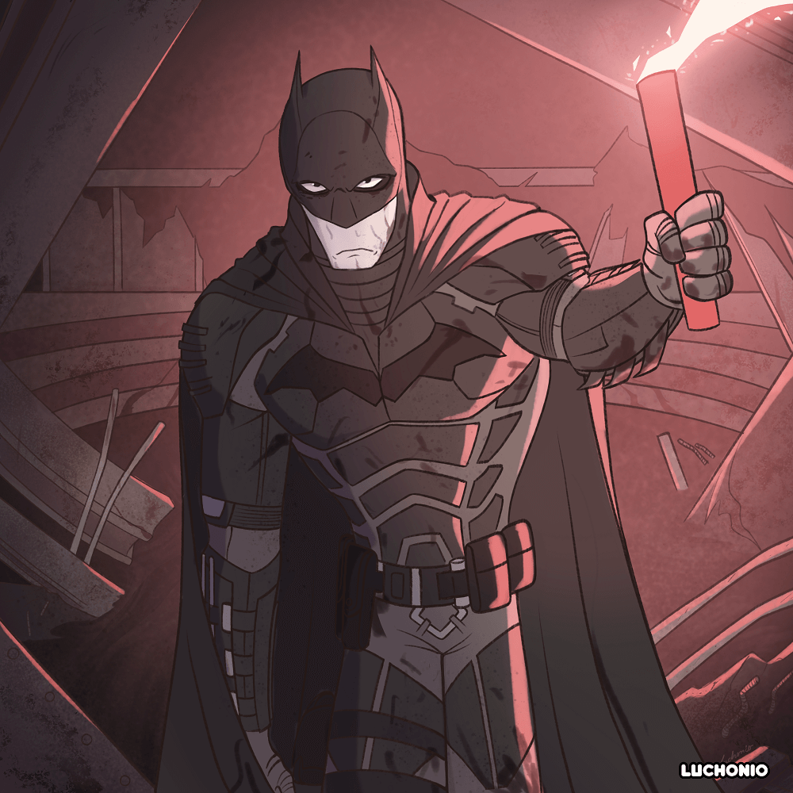
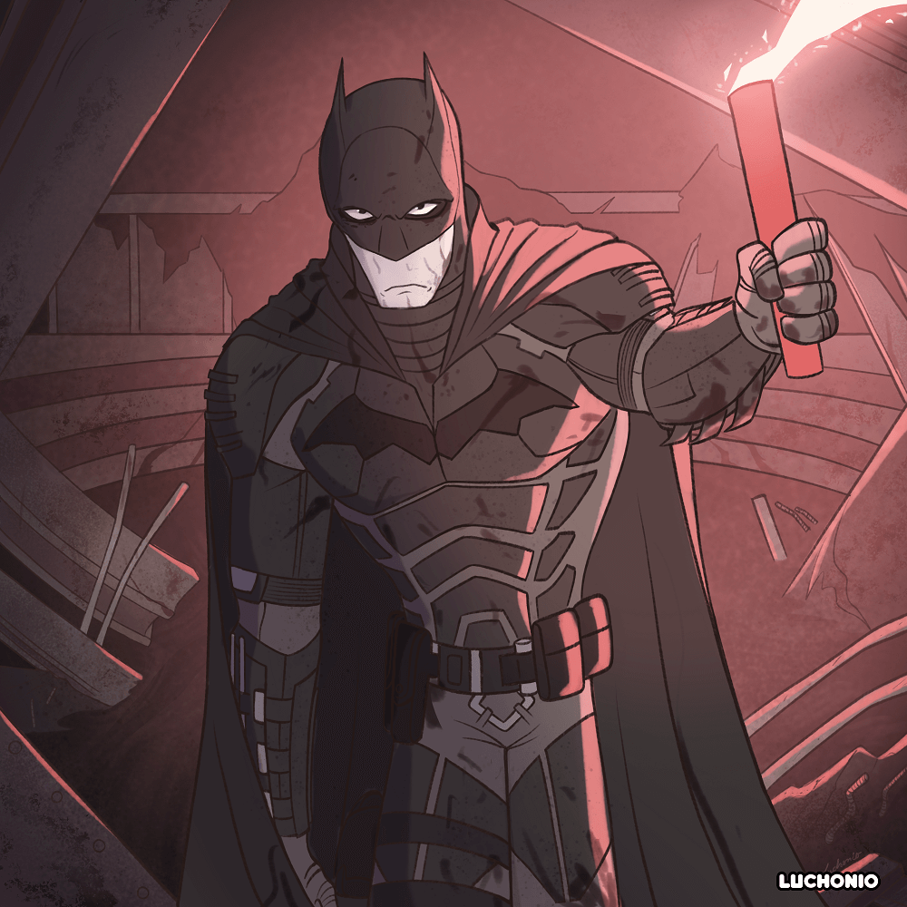
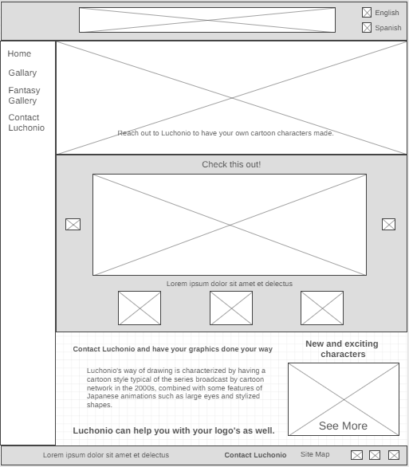
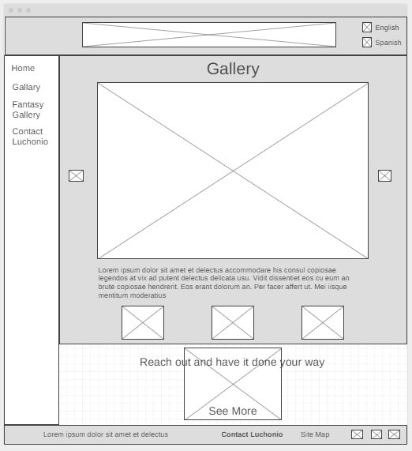
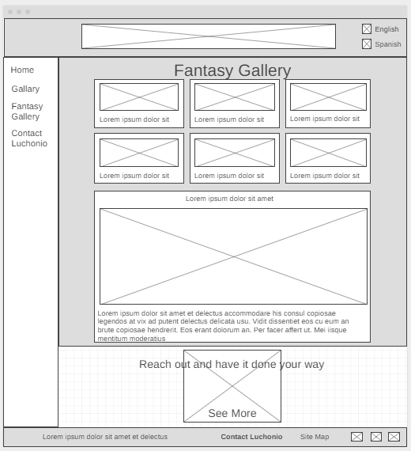

Visión General
Objetivo
Este sitio web pretende funcionar como un portafolio artístico de tal manera que muestre los servicios y trabajos que ofrece Luchonio como marca personal, la cual se especializa en dibujos animados. Los servicios que ofrece van desde la creación de personajes hasta el diseño de logotipos, todo ello siempre de la mano del cliente, buscando a su vez también dar a conocer algunos proyectos personales de cómic y animación que se están desarrollando a futuro.
Audiencia
Personas mayores de edad, entre los 20 a 35 años, que busquen un estilo de arte que se asemeje a las series que veían en su niñes y a su vez siga las tendencias actuales a través de un estilo cartoon. Además, se apunta a aquellos que busquen graficar cualquier idea que tengan ya sea desde un logo, comic, diseño de personaje; y volver realidad las historias que tengan en mente para poder darlas a conocer al público ya sea por las redes sociales o de manera impresa.
Marca
Logotipo del Sitio Web
Guía de Estilo
Paleta de Color
URL de Paleta:
https://coolors.co/3e3e4d-f7bc16-732601-fee485-86836d| Primario | Secundario | Acento 1 | Acento 2 | Acento 3 |
|---|---|---|---|---|
| #3e3e4d #3e3e4d |
#f7bc16 #f7bc16 |
#732601 #732601 |
#fee485 #fee485 |
#86836d #86836d |
Tipografía
Fuente de Encabezado: Caveat
Fuente de Párrafo: Edu QLD Beginner
Ejemplo de párrafo normal
Conozcamos a Luchonio. Sus imágenes de dibujos animados son una mezcla de estilos clásicos y modernos que se destacan para crear su propio estilo distintivo.
Ejemplo de párrafo coloreado
Tiene fotogramas, dos proyectos de serie y una animación para poder mostraros.
Navegación
Mapa del Sitio
Contenido
Inicio
Inglés
Español
Mira esto!
Nuevos y emocionantes personajes
Ponte en contacto con Luchonio para tus personajes de dibujos animados
Luchonio también puede ayudarlo con su logotipo
Contactanos y pide los graficos a tu gusto
Luchonio's manera de dibujar se caracteriza por tener un estilo cartoon tipoco de las series emitidas por cartoon network en la epoca de los 2000, convinado con algunos razgos de las animaciones japonesas como lo son los ojos grandes y las formas estilizadas.
Conoce a Ambarine
Conoce el Mommy Long Leggs Boceto
Conoce a Buttercup
Ver más
Imágenes para el Inicio


Galeria
Inglés
Español
En este dibujo podemos ver a la tripulación del bebop de la animada japonesa Cowboy bebop, siendo un fan art me tome la libertad de adaptar los diseños de la animación ah mi estilo de dibujo, en general use colores más vivos para el fondo como en los personajes para poder distanciarme un poco mas de los diseños originales y darles un toque más personal.
Dibujo de Buttercup el cual realice como parte de un reto en redes sociales, el cual consistía en dibujar al personaje de la serie animada para niños “Powerpuff girls” a tu estilo de dibujo, en una de las poses mas recordadas de esta serie de televisión. Quise respetar lo mas que pude el diseño original ya que es una serie animada de la cual soy un gran fan, puesto que la miraba cuando era niño.
Este es un dibujo del personaje de Gwen de Drama Total, en el cual quise dar la sensación de sensualidad con la pose del personaje y a su vez colocarle un fondo detallado y acorde al tono de la serie animada el cual trata de un reality show en una isla donde las entrevista con los participantes se den en los baños.
Contacta con nosotros y hazlo a tu manera
Imágenes para el Galeria
Galeria de Fantasia
Inglés
Español
Ambarine "knuckles witch" 👊 es un personaje de mi amigo danigrex2n, el cual es una peleadora en un mundo lleno de magia y fantasía, en este dibujo rediseñe a su personaje para que se adaptara mejor al estilo de dibujo tipo cartoon que manejo, al ser un personaje el cual gusta de las peleas tuve que dibujarla en una pose que demostrara toda su personalidad.
🌌 Vanessa Misterio 🌌 este dibujo es el retrato del personaje de mi amiga Vanessa, el cual es una especie de ser angelical, en este dibujo resaltan mucho los colores de las alas en violeta y blanco las cuelas contrastan muy bien con el fondo.
👻 La tenebrosa Evelyne 😱, personaje del webcómic con el mismo nombre “La tenebrosa Evelyne” creado por @inksowl_comics, el cual trata de una chica que puede ver fantasmas y entidades demoniacas, este dibujo lo realice como parte de una temática en redes sociales lanzada por el mismo autor y creador del personaje, la cual consistía en dibujar a su personaje a tu manera con un fondo aterrador. En lo personal encanta el diseño de su personaje el cual tiene una temática algo gotica, este fue uno de mis primeros trabajos con estilo cartoon.
Este es un dibujo de Asajj Ventress el cual es un personaje de las series de clone wars el cual pertenece a la franquicia de star wars de la cual soy fan, en este caso combine un poco 2 diseños del personaje teniendo en cuenta su apariencia en ambas series, también opte por colocarla en una pose de pelea ya que es una especie de lord Sith.
Fan art del video juego de terror Poppy Playtime del personaje Mommy long legs el cual es una especio de juguete gigante el cual tiene como característica principal la de poder alargar sus extremidades de manera exagerada para poder así atrapar a sus víctimas. En esta ocasión quise probar algo diferente y comenzar a dibujar criaturas.
Dibujo de Batman inspirado en la película de The Batman, en este dibujo quise jugar un poco con las luces y los tonos de oscuros y cafes en la armadura de batman, a su vez el fondo esta compuesto por escombros y agua que corre por todo el mismo.
Contacta con nosotros y hazlo a tu manera
Imágenes para la Galería de Fantasía


 

Estructuras Alámbricas
Inicio
utilizará "How TO - Vertical Tabs" - https://www.w3schools.com/howto/howto_js_vertical_tabs.asp
utilizará "How TO - Slideshow Gallery" - https://www.w3schools.com/howto/howto_js_slideshow_gallery.asp
Galeria
utilizará "How TO - Vertical Tabs" - https://www.w3schools.com/howto/howto_js_vertical_tabs.asp
utilizará "How TO - Slideshow Gallery" - https://www.w3schools.com/howto/howto_js_slideshow_gallery.asp
Pase el cursor sobre la imagen de la galería grande para una vista más grande
Galeria de Fantasia
utilizará "How TO - Vertical Tabs" - https://www.w3schools.com/howto/howto_js_vertical_tabs.asp
utilizará "How TO - Portfolio Gallery" - https://www.w3schools.com/howto/howto_css_portfolio_gallery.asp
Pase el cursor sobre la imagen de la galería grande para una vista más grande
